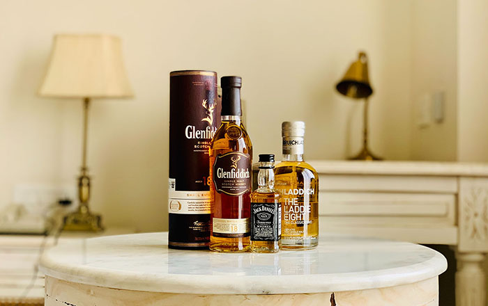
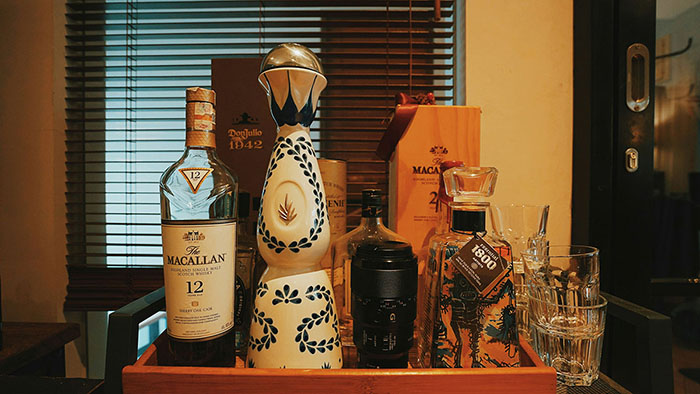
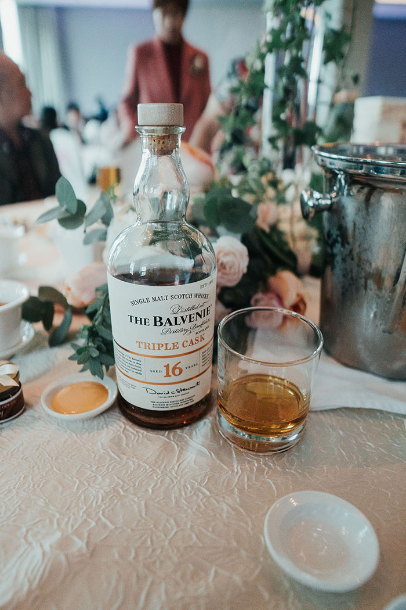
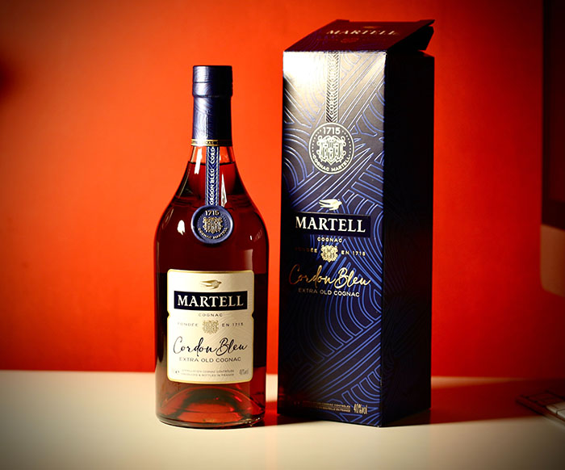
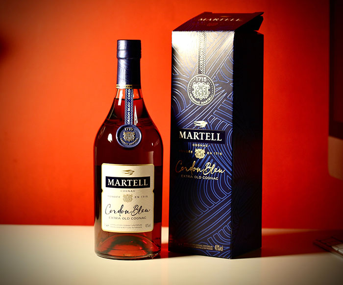

Single Malt
싹을 틔운 곡물, 그중에서도 보통은 맥아(보리)를 원료로 하여 단일 증류소에서 만든 몰트 위스키를 말한다.
- 스코틀랜드 싱글 몰트
- Macallan
- Glenfiddich
- Lagavulin
- Ardbeg
- Glenlivet
- 아일랜드 싱글 몰트
- Redbreast
- Bushmills
- Jameson
- 일본 싱글 몰트
- Nikka
- Yamazaki
- Hakushu



 
